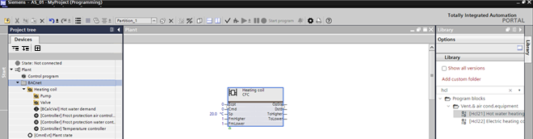
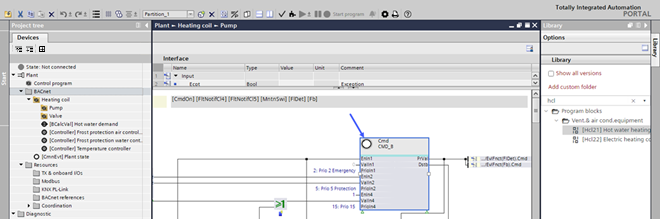
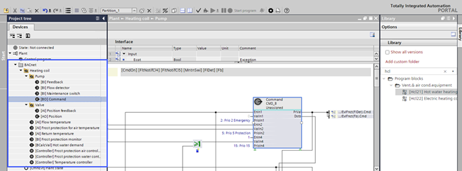
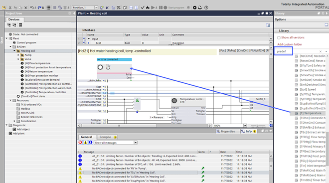
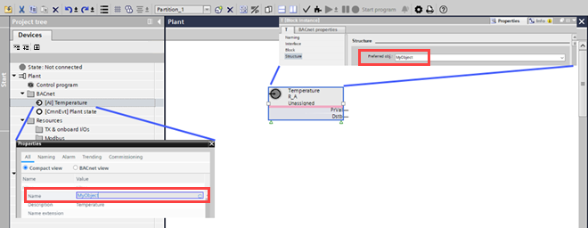
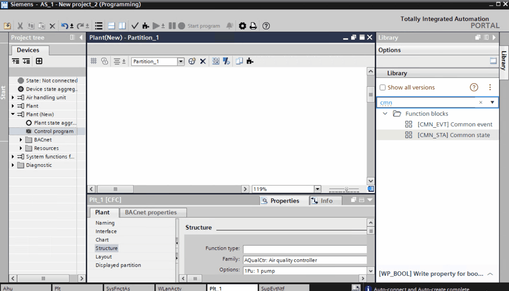
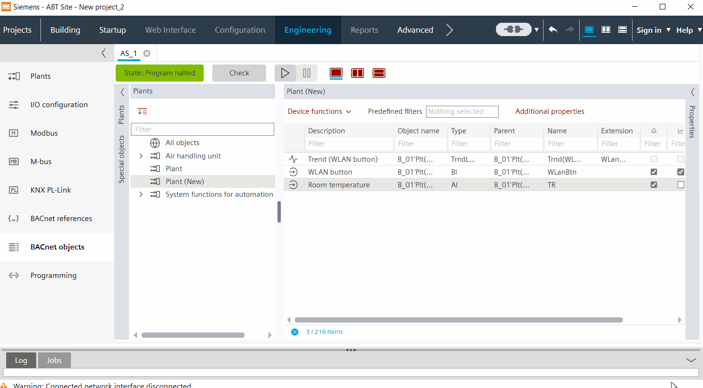

Auto-connect and auto-create association of I/O data points and other BACnet objects to function blocks
Performs two-stage logic to associate the I/O data points and other BACnet objects with function blocks, that are missing an association. In the first step, check whether the matching I/O data points or BACnet objects are available in the control program and can be linked to these function blocks. If no association can be created, attempt in a second step to instantiate the I/O data points from the library.
- A control program exists, but the BACnet objects are not assigned to the I/O data points. In the Project tree, only few BACnet objects are available.

- Click Check
 .
. - The objects without BACnet objects are listed.

- (Optional) Select a row and click Go to
 .
. - The control program opens. The I/O data point displays without a BACnet object information.

- Click Auto-connect and auto-create BACnet objects
 .
. - The I/O data points in the Project tree are assigned to BACnet objects. The assignment is based on the two-stage logic.

- Click Check .
- The remaining objects without BACnet objects are listed.
- Rework the unassigned objects with library objects.
Manually assign remaining I/O data points
- In the Library tab, enter the filter name predef.
- Drag a corresponding library object to the I/O data point in the control program.

- Open the Properties tab.
- Rework the original library information with the current project information of that data point.
Note: The BACnet object (property Name) and the I/O data point in the control program are assigned via the property Preferred object. The algorithm searches the entire project tree to assign the corresponding object, so that the object does not necessarily have to be on the same hierarchy level.

Support auto-connect and auto-create with naming extension
Auto-connect and auto-create BACnet objects takes any provided object extension into account and:
- Connects an FB to a matching BACnet object with the provided object extension.
- Creates a matching BACnet object with the provided extension, if there is no BACnet object available to connect.

- From the Library, drag two Field devices (FBs) to the chart.
- To detach the FBs, go to Properties > Block.
In the BACnet object type field, select None.
Or
Go to the Project tree and right-click the BACnet object and select Delete. - Select the FBs and go to Properties > Structure.
- In the Obj. extension field, for example, enter the extension as 1 and 2 respectively.
In the Project tree, select the BACnet objects and give the same extension as of the FBs. - Click (Auto-connect and auto-create BACnet objects).
- The preferred objects in the chart is connected to the BACnet objects in the Project tree.
- If the preferred objects do not match with the BACnet object in the Project tree, a new BACnet object is created in the Project tree with similar properties of the preferred object.
- In the Project tree, select the object in the BACnet folder.
- Right-click and select Properties.
- The Name, Description and Name extension matches with that of the FB properties.
- Right-click the FBs and select Show in plant structure.
- The FBs takes you to the connected BACnet object in the Project tree.
Support auto-connect for special objects
The auto-connect option is applicable to special objects like trend log objects and state aggregation. Unassigned FBs is automatically assigned to existing BACnet preferred objects through auto-connect.

You can perform only auto-connect and not auto-create operation.
Preferred object | Assigned BACnet object |
|---|---|
\Plt | Plant - the parent plant of the chart structure where the FB is present. |
\AS | AS_VIEW - the automation station view of the parent of plants and infrastructure. |
\WLAN | Infra'NwkPortWLAN - the WiFi port object in the infrastructure. |
Auto-connect is performed for plant and state aggregation with device version greater than 1.4.

- From the Library, drag two CMN_STA function blocks and one RP_BOOL/WP_BOOL function block (FBs) to the chart.
- Select the FBs and go to Properties > Structure.
- In the Preferred obj field, enter:
\Plt or \AS or \WLAN
Note: The values in the Object Extension and Object Context fields are ignored. - Click (Auto-connect and auto-create BACnet objects).
- The FB with preferred object as \Plt is assigned to Plant state aggregation in the PNV.
- The FB with preferred object as \AS is assigned to Device state aggregation.
- The FB with preferred object as \WLAN is assigned to the Infra'NwkPortWLAN object by creating an implicit BACnet reference with network port in the Project tree > BACnet references folder.
- In the Project tree go to the BACnet object and right-click the FB and select Properties.
- The Node subtype matches with that of the FB properties.
- In the chart, right-click the FBs and select Show in plant structure.
- The FBs takes you to the connected BACnet object in the Project tree.
The preferred objects \Plt, \AS, and \WLAN are case sensitive.
Support auto-connect for special objects - Trend log objects
Auto-connect function is applicable for trend log objects.
If multiple trend log objects are assigned to a BACnet object, only one of them is auto-connected to the FB.

- The FB is compatible with a trend log object (e.g. RP or WP).
- Go to Engineering > BACnet objects.
- Add a trend log object manually for an existing BACnet object. See Trend log object.
- To add a companion trend object for an existing BACnet object, select the BACnet object and tick the checkbox in the (Trending) column.
- The application creates a corresponding trend object for the existing BACnet object.
- To assign the BACnet object to its trend log object, go to the Library and drag oneRP or WP function block (FB) to the chart.
- Select the FB and go to Properties > Structure.
- In the Preferred obj field, enter +TR, where TR is the name of the BACnet object whose trend object must be auto-connected
- Click (Auto-connect and auto-create BACnet objects).
- The FB with preferred object as +TR auto connects to trend log of the BACnet object in the PNV.
- In the Project tree go to the BACnet object and right-click the FB and select Properties.
- The Name value matches with that of the FB properties.